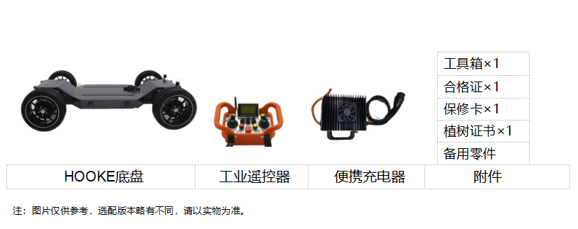
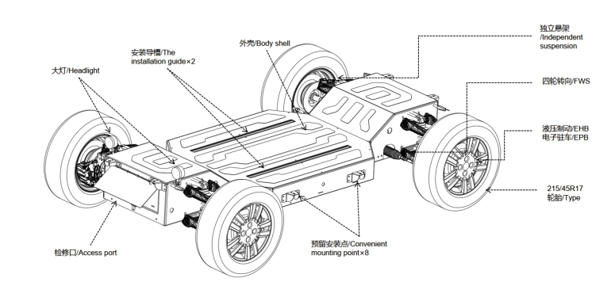
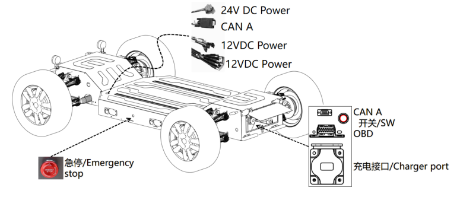
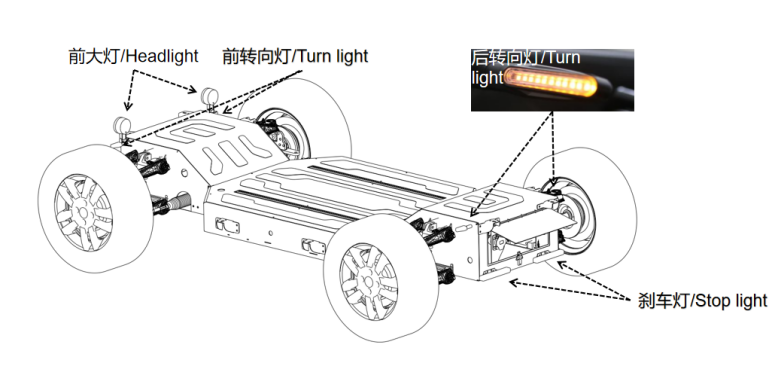
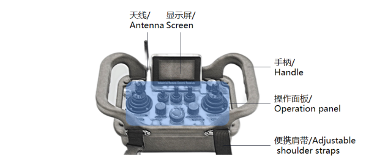
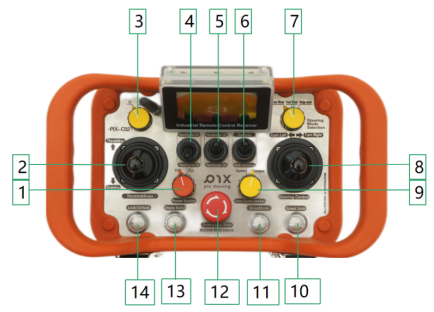
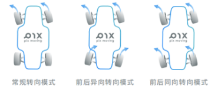
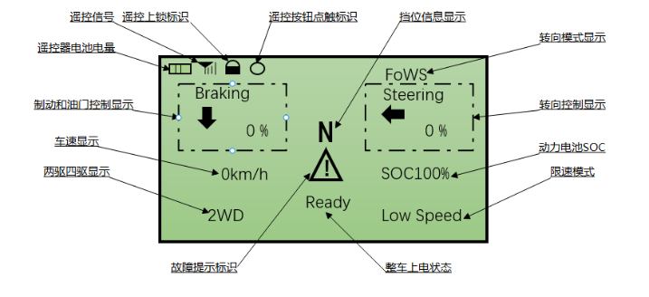
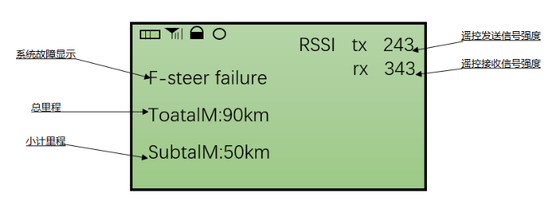
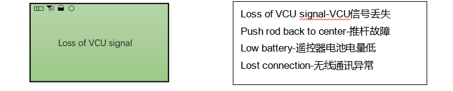

Product Introduction
1 Product List

2 Basic Functions
The chassis is connected to the chassis body through a wireless remote control, and the basic control of the chassis can be performed through a wireless remote control or other CAN communication control systems, and autonomous driving can also be deployed to realize autonomous driving functions, including:
-
Four-wheel independent motion control [rear drive, four-wheel drive, four-wheel independent control and differential steering mode can be opened under advanced functions (optional)].
-
Chassis gear switching (forward gear, reverse gear, neutral gear).
-
Two steering modes (front wheel Ackerman steering mode, four-wheel steering mode).
-
Chassis Electric Parking Brake (EPB)/hydraulic brake control.
-
Chassis brake control.
-
Multiple voltage platform power supply function.
-
Autonomous driving/remote control switching.
-
Low speed driving mode.
-
Advanced autonomous driving development, etc.
3 Product Overview
The main load-bearing structure of the PIXLOOP chassis is assembled with high-strength steel, and the surface cover is sprayed aluminum. The wheel suspension part is formed by professional stamping, and the design process uses finite element analysis to fully meet the various impacts and challenges brought about by vehicle motion control and different scene factors. Surface formed decking provides high mechanical strength combined with aesthetics. The chassis body adopts an intercommunicating box-type structure design, which provides relatively large space redundancy for chassis equipment installation and later expansion.

3.1 Switch And Connection Ports
The schematic diagram of the chassis switch and the open interface is as follows:

Emergency Stop
The emergency stop switch of the body is triggered after being pressed, and the trigger takes effect immediately.The chassis loses power, the turn signal "double flashes", and the chassis enters the parking state. Rotate right as shown in the figure to release the emergency stop state.
CAN A
The autonomous driving CAN is used to receive commands and feedback chassis information. It is located under the rear access panel of the chassis body and on the surface of the chassis. There are two places in total.
OBD
Fault access port for chassis inspection.
Power Interface
The 24V power interface provides a rated 300W 24V DC power supply; the 12V rated 500W DC power supply provides two types of multiple 12V DC power interfaces. The voltage mark is marked on the corresponding wiring harness.
3.2 Light Indication
The chassis provides the basic lighting system of the vehicle. Compared with traditional vehicles, it includes headlights, front and rear turn signals, and brake lights.

Headlight
The chassis headlights are controlled by the remote control toggle switch. Open the chassis, when the toggle switch is in the down position, the headlights are dimly lit in blue. When the toggle switch is in the upper position, the headlights are always on, and the light color is white. At the same time, the headlights provide a system development interface to meet the development of secondary headlight control strategies.
Turning light
The chassis turning lights are standard turning status lights, and the specifications of the front, rear, left, and right turn lights are the same. By default, the turning lights are automatically controlled, and a system development interface is provided at the same time. When the chassis triggers an emergency stop or loses contact, the four turning lights continue to "double flash".
Brake light(Stop light)
The chassis brake light is located at the rear of the body, also known as the tail light. When the system is turned on, the taillights will remain on continuously, and will be bright when braking. At the same time, the taillight provides a system development interface to meet the secondary taillight control strategy development.
3.3 Romote Control
The wireless remote control is the basic controller connected to the PIX chassis. All basic vehicle controls can be realized under the condition of the wireless remote control running. It is also the chassis control interface with the highest authority other than non-body control.
| Remote control frequency band | 443MHz | Receiver communication interface | CAN Interface |
|---|---|---|---|
| Remote control power supply mode | 3×1.5V No.5 dry cell | Remote control display | LCD display |
| Receiver power supply | 12-24V DC power supply | Communication distance | 150M (depending on the surrounding environment) |

The operation panel integrates a variety of switches, including remote control joystick × 2; two-stage toggle switch × 3; button × 4; knob switch × 4, the functions are introduced as follows.

| No. | Button Name | No. | Button Name |
|---|---|---|---|
| 1 | Power switch | 8 | Steering push rod |
| 2 | Throttling/Braking push rod | 9 | Power control mode |
| 3 | Gear switch: D N R | 10 | Low speed mode switch |
| 4 | Headlight switch | 11 | Drive Mode(Four-wheel drive switch) |
| 5 | Parking switch | 12 | Emergency Stop |
| 6 | Control mode: Remote Control/Autonomous driving | 13 | Display switch |
| 7 | Steering Mode | 14 | Lock |
Power Switch
The power switch is the power-on switch of the remote control.
Throttling/Braking push rod
This push rod controls the accelerator signal and brake signal of the vehicle. Both the accelerator control and the brake control are 0-1024 one-way push rodcontrols. Push the rod up to realize the chassis acceleration operation, and push it down to realize the chassis electronic brake operation.
Gear switch: D N R
The knob controls the vehicle gear switch, providing D, N, R three gear modes.
-
D gear: Forward gear, the vehicle moves forward when the accelerator is pushed.
-
N gear: The neutral gear is also the parking gear, and the vehicle does not respond when the accelerator is pushed.
-
R gear: Reverse gear, the vehicle moves backward when the accelerator is pushed.
Parking switch
It is a two-stage push rod switch, which can control the electronic parking brake(EPB). When the push rod switch is in the upper position, the parking function is turned off. The push rod switch is in the down position to start the parking function
Control mode: Remote Control/Autonomous driving
This button toggles the chassis control mode. Push the rod down to switch to the autonomous driving mode, and push the rod up to exit the autonomous driving mode and switch to the manual remote control mode.
Steering Mode
The knob controls the switching of the steering mode of the chassis, providing three steering modes: normal steering mode, front and rear opposite direction steering mode, and front and rear same direction steering mode.

Steering push rod
This push rod controls the steering signal of the chassis, and the steering control is a two-way push rod control with levels from -1024 to +1024. Move the push rod to the left, and the chassis will turn left. Move the push rod to the right, and the chassis will turn right.
Power control mode
The chassis supports the torque control method. In the torque control mode, the remote controller outputs the torque value, that is, the driving force of the motor.
Low speed mode switch
This button activates low speed mode. The low-speed mode is mainly to prevent the chassis speed from being too fast and causing danger when the operator is not familiar with the operation method. In speed control mode, the speed limit is 5km/h. In throttle mode, when the speed is greater than 4km/h, the chassis will limit the requested torque, and the requested torque will be reduced to 0 when the speed exceeds 5km/h. If you are going downhill, the speed may exceed 5km/h due to gravity.
Drive Mode(Four-wheel drive switch)
The switching of two-wheel motor driving and four-wheel motor driving.
Emergency Stop
Control the vehicle to an emergency stop. Press the emergency stop switch button to start the emergency stop of the chassis, and turn the emergency stop switch button to the right to release the emergency stop function.
NOTE: The emergency stop switch is for emergency use only. Do not keep the emergency stop switch button pressed for a long time.
Display Switch
The remote control mainly has two pages, which can be switched through the Display Switch on the remote control. The first display screen mainly displays the operation instructions and the basic status of the chassis, and the second display interface mainly displays the chassis mileage, specific system faults and the signal strength of the remote control (the signal strength ranges from 0-255 to represent from weak to strong).
Lock
The remote control cannot be operated after it is locked.
Display panel introduction
The remote control has two main pages, which can be switched through the Display Switch on the remote control. The first display screen mainly displays the operation instructions and the basic status of the chassis. The detailed introduction is as shown in the figure below.

The second display interface mainly displays the chassis mileage, specific system faults and the signal strength of the remote control. The detailed introduction is shown in the figure below (the signal strength ranges from 0-255 to represent from weak to strong).

In addition, the remote control has a prompt interface for displaying fault signals of the remote control.

Tips for safe operation of the remote control
-
When the remote control is turned on and off, it is necessary to ensure that each key is in the closed state, that is, parking, neutral, remote control takeover, and no throttle.
-
After entering the remote control mode, do not push the accelerator to the maximum at one time to avoid danger, but slowly push the accelerator to control the direction to verify whether the buttons are working normally.
-
The range of the remote control is guaranteed to be 50 meters in an open environment
-
After parking, ensure that the vehicle is parked and in neutral, and avoid parking on ramps.
-
For safety reasons, anyone should carefully read the relevant instructions of the remote control before using it, and do not hand over the remote control to people who are not familiar with the relevant operations to avoid danger;
-
After the remote control signal is lost, the chassis triggers the safety protection mechanism, and the chassis stops in an emergency
-
For your safety, before entering the automatic driving mode, please be sure to be familiar with the various operations of the remote control in advance, especially for the use of the emergency stop function, please confirm the remote control operation before entering the autonomous driving mode each time. For your safety, we have defined the absolute priority of the remote control at the industrial computer and the underlying protocol layer, that is, in any state of platform movement (please ensure that the remote control has sufficient power before each operation), as long as the remote control is powered on and in the remote control takeover state, the platform will enter the manual takeover mode to escort your safety test.